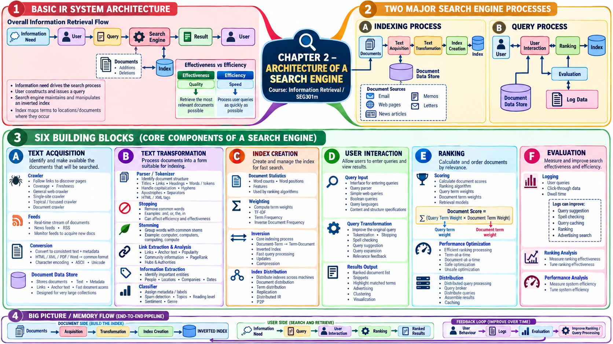

Tài liệu gốc: Slide bài giảng SEG301m Chương 2, "Architecture of a Search Engine" (34 slide)
Cách đọc: Trước tiên hãy tách biệt hai quy trình: "luồng chuẩn bị tài liệu" và "luồng trả lời câu hỏi của người dùng". Sau đó, theo dõi từng thành phần nhận dữ liệu gì và chuyển tiếp dữ liệu gì cho khâu tiếp theo để nắm bắt toàn diện kiến trúc công cụ tìm kiếm.
Mục tiêu của chương
Sau khi học xong chương này, bạn có thể giải thích các nội dung sau:
- Trình bày mối quan hệ giữa nhu cầu thông tin, truy vấn, tập tài liệu và chỉ mục.
- Phân biệt rõ quy trình lập chỉ mục và quy trình xử lý truy vấn.
- Giải thích 6 khối thành phần chính cấu tạo nên công cụ tìm kiếm theo luồng dữ liệu.
- Phân biệt hiệu năng tìm kiếm thể hiện qua tính hiệu quả (effectiveness) và tốc độ thể hiện qua tính hiệu năng (efficiency).
SLIDE NGUỒN 1-3

Kiến thức cần chuẩn bị
Hãy ôn lại các thuật ngữ quan trọng đã học ở Chương 1:
- Truy vấn (query): Từ ngữ hoặc điều kiện người dùng nhập vào hệ thống tìm kiếm.
- Tài liệu (document): Trang Web, email, tệp PDF hoặc bất kỳ đơn vị dữ liệu nào cần tìm kiếm.
- Độ liên quan (relevance): Mức độ tài liệu đáp ứng được nhu cầu thông tin của người dùng.
- Xếp hạng (ranking): Việc sắp xếp các tài liệu hữu ích dự đoán lên các vị trí hàng đầu.
2.1 Thông tin tổng quan về kiến trúc hệ thống
SLIDE NGUỒN 4-8
Khởi đầu từ nhu cầu muốn biết của người dùng
Quá trình tìm kiếm thực chất bắt đầu từ trước khi người dùng gõ ký tự vào ô tìm kiếm. Người dùng xuất phát từ một nhu cầu thông tin (information need). Ví dụ, người dùng có nhu cầu "muốn biết thời tiết ngày mai ở Thành phố Hồ Chí Minh" và chuyển hóa nhu cầu đó thành truy vấn như thoi tiet ho chi minh ngay mai.
| Thành phần | Vai trò | Ví dụ thực tế |
|---|---|---|
| Nhu cầu thông tin | Điều người dùng thực sự muốn biết | Muốn biết ngày mai có mưa không để lên kế hoạch |
| Người dùng | Người đang cần thông tin | Sinh viên chuẩn bị đi thực địa |
| Truy vấn | Cách diễn đạt nhu cầu thành dạng máy tìm được | thoi tiet ho chi minh ngay mai |
| Công cụ tìm kiếm | Xử lý truy vấn và trả kết quả | Tìm các trang phù hợp và xếp thứ tự |
| Tập tài liệu | Tập hợp dữ liệu cần tìm kiếm | Các trang Web, bản tin thời tiết, tệp dữ liệu |
| Chỉ mục | Cấu trúc dữ liệu tra cứu vị trí từ từ ngữ | Danh sách các tài liệu có chứa từ thời tiết |
Slide 4 cũng chỉ ra rằng tập tài liệu luôn diễn ra các hoạt động thêm mới và xóa bỏ. Chỉ mục không phải là bảng cố định vĩnh viễn mà liên tục được cập nhật theo sự thay đổi của tập tài liệu.
Vai trò của chỉ mục đảo
Công cụ tìm kiếm không đọc lại từng tài liệu từ đầu đến cuối mỗi khi có người tìm. Thay vào đó, hệ thống xây dựng trước chỉ mục đảo (inverted index) để ghi nhận "từ này xuất hiện ở những tài liệu nào và tại vị trí nào".
| Góc nhìn theo tài liệu | Góc nhìn theo từ (Chỉ mục đảo) |
|---|---|
Tài liệu A chứa search, engine |
search → Tài liệu A, Tài liệu C |
Tài liệu B chứa crawler, web |
engine → Tài liệu A, Tài liệu D |
Hai mục tiêu thiết kế cốt lõi
SLIDE NGUỒN 5
Hai mục tiêu thiết kế hàng đầu của một công cụ tìm kiếm là:
- Tính hiệu quả (effectiveness): Trả về kết quả có độ liên quan cao nhất có thể đối với câu truy vấn.
- Tính hiệu năng (efficiency): Xử lý truy vấn của người dùng trong thời gian nhanh nhất có thể với chi phí tài nguyên tối ưu.
Một kết quả tìm kiếm dù cực kỳ chính xác nhưng phải đợi vài phút mới có thì không ai muốn dùng; ngược lại, trả về tức thì nhưng toàn thông tin vô giá trị thì cũng vô ích. Hệ thống tìm kiếm bắt buộc phải cân bằng cả hai yếu tố này.
Quy trình lập chỉ mục (Indexing Process)
SLIDE NGUỒN 6-7
Ở nhánh lập chỉ mục, các tài liệu được chuẩn bị sẵn sàng trước khi có bất kỳ truy vấn nào gửi tới:
- Thu thập văn bản: Thu thập email, trang Web, bài báo tin tức.
- Lưu trữ tài liệu gốc vào kho dữ liệu tài liệu (document data store).
- Biến đổi văn bản: Phân tích tài liệu và chuyển thành các từ và cấu trúc phục vụ tìm kiếm.
- Tạo chỉ mục: Xây dựng chỉ mục đảo liên kết giữa từ ngữ và vị trí tài liệu.
Bốn khối chức năng này tuy được vẽ thành các hộp riêng biệt nhưng liên tục phối hợp và luân chuyển dữ liệu cho nhau.
Quy trình xử lý truy vấn (Query Process)
SLIDE NGUỒN 6, 8
Sau khi người dùng gửi yêu cầu tìm kiếm, một nhánh xử lý khác sẽ kích hoạt:
- Tương tác với người dùng (User Interaction): Tiếp nhận câu truy vấn.
- Xếp hạng (Ranking): Dùng chỉ mục để tính điểm và chấm điểm các tài liệu ứng viên.
- Khi cần thiết, đọc nội dung gốc từ kho lưu trữ tài liệu để tạo đoạn trích kết quả (snippet).
- Hiển thị kết quả ra màn hình và ghi lại nhật ký (log) các hành vi như lượt nhấp chuột.
- Đánh giá (Evaluation): Dùng dữ liệu nhật ký và tập kiểm thử để phân tích chất lượng xếp hạng và tốc độ hệ thống.
Xem đáp án gợi ý
Về mặt hiệu năng, Web có hàng tỷ trang; việc tải về và duyệt từng trang tại thời điểm người dùng tìm kiếm sẽ mất nhiều giờ hoặc nhiều ngày, hoàn toàn không đáp ứng được yêu cầu thời gian thực. Về mặt hiệu quả, việc quét toàn bộ trong thời gian ngắn không thể kịp áp dụng các mô hình lọc spam, phân tích liên kết đồ thị phức tạp hay tính toán trọng số sâu để đưa ra kết quả chất lượng cao.
2.2 Thu thập văn bản
SLIDE NGUỒN 9-13
Nhiệm vụ của thu thập văn bản (text acquisition) là phát hiện, thu gom các tài liệu mục tiêu và chuẩn bị sẵn sàng ở định dạng mà các khâu tiếp theo có thể sử dụng. Các thành phần chính gồm: trình thu thập (crawler), nguồn cấp (feed), chuyển đổi định dạng và kho dữ liệu tài liệu.
Trình thu thập (Crawler)
SLIDE NGUỒN 10-11
- Trình thu thập Web tổng quát (general Web crawler): Lần theo các liên kết siêu văn bản để thu thập lượng lớn trang Web. Thách thức lớn là đảm bảo độ bao phủ (coverage) rộng khắp và giữ cho dữ liệu luôn có độ mới (freshness).
- Trình thu thập trang (site crawler): Chỉ thu thập dữ liệu bên trong một trang web hoặc một tên miền nhất định để phục vụ tìm kiếm nội bộ trang.
- Trình thu thập theo chủ đề (focused / topical crawler): Ưu tiên thu thập các trang thuộc một lĩnh vực chuyên biệt, phục vụ công cụ tìm kiếm dọc (vertical search).
- Trình thu thập tài liệu (document crawler): Quét các thư mục trong mạng nội bộ doanh nghiệp hoặc trên máy tính cá nhân để thu thập tệp tin.
Nguồn cấp (Feed)
SLIDE NGUỒN 12
Nguồn cấp (feed) là luồng dữ liệu tài liệu liên tục được bên phát hành chủ động đẩy về hệ thống. Các trang tin tức và blog thường sử dụng chuẩn RSS hoặc Atom. Thay vì để crawler phải chủ động đi dò tìm, nguồn cấp cho phép hệ thống nhận ngay các bài viết mới cập nhật theo thứ tự thời gian.
Chuyển đổi định dạng và bảng mã
SLIDE NGUỒN 12
Tài liệu thu về có rất nhiều định dạng khác nhau: HTML, XML, PDF, Microsoft Word. Để đơn giản hóa các khâu xử lý phía sau, hệ thống chuyển đổi tất cả nội dung văn bản và metadata về một định dạng cấu trúc chung.
Slide bài giảng đối chiếu giữa ASCII 8-bit và Unicode. Bảng mã ASCII đơn thuần không thể biểu diễn được các ngôn ngữ có dấu hoặc chữ tượng hình như tiếng Việt, tiếng Trung, tiếng Nhật. Trong thực tế, hệ thống chuẩn hóa mọi văn bản đầu vào về Unicode (thường là chuẩn mã hóa UTF-8).
Kho lưu trữ dữ liệu tài liệu (Document Data Store)
SLIDE NGUỒN 13
Kho dữ liệu tài liệu quản lý khối lượng lớn văn bản gốc và các trường thông tin có cấu trúc:
- Lưu trữ nội dung văn bản, tiêu đề, ngày tạo và các trường metadata.
- Lưu trữ các thông tin liên kết như danh sách liên kết ra, liên kết vào và văn bản neo (anchor text).
- Cho phép truy xuất nhanh nội dung tài liệu theo mã định danh (document ID) để tạo đoạn trích kết quả (snippet).
- Với quy mô nhỏ có thể dùng cơ sở dữ liệu quan hệ, nhưng với quy mô cực lớn cần đến các hệ thống lưu trữ phân tán chuyên dụng (như BigTable hoặc NoSQL).
2.3 Biến đổi văn bản
SLIDE NGUỒN 14-18
Tài liệu sau khi thu thập nếu đưa thẳng vào chỉ mục sẽ bị lẫn các thẻ định dạng, lỗi chính tả, quảng cáo và từ rác. Biến đổi văn bản (text transformation) chuyển đổi văn bản thô thành biểu diễn chuẩn phục vụ lập chỉ mục và tìm kiếm.
Bộ phân tích cú pháp (Parser) và Bộ tách từ (Tokenizer)
SLIDE NGUỒN 15
- Bộ phân tích cú pháp (parser): Nhận diện cấu trúc của tài liệu như tiêu đề, các phần đề mục, liên kết, danh sách. Trong tài liệu HTML hay XML, các thẻ đánh dấu chính là manh mối nhận diện cấu trúc.
- Bộ tách từ (tokenizer): Cắt chuỗi ký tự liên tục thành các đơn vị từ hoặc ký hiệu độc lập (token).
Khi tách từ, hệ thống phải quy định rõ cách xử lý chữ hoa/thường, dấu gạch nối, dấu nháy đơn, dấu câu và các ký tự đặc biệt. Trong tiếng Việt, từ có thể gồm nhiều âm tiết ghép lại (từ ghép như công cụ tìm kiếm), do đó việc tách từ đòi hỏi kỹ thuật phân đoạn từ (word segmentation) thay vì chỉ ngắt theo khoảng trắng như tiếng Anh.
Loại bỏ Stopword và Stemming
SLIDE NGUỒN 16
- Loại bỏ từ dừng (stopping): Loại bỏ các từ quá phổ biến nhưng mang ít giá trị phân biệt nội dung (trong tiếng Anh như
and,the,in; trong tiếng Việt nhưvà,của,những). - Rút gọn từ về gốc (stemming): Đưa các biến thể từ về cùng một dạng gốc chung (ví dụ trong tiếng Anh gom
computer,computers,computingvềcompute).
Cả hai kỹ thuật này đều cần áp dụng thận trọng. Ví dụ với câu truy vấn kinh điển to be or not to be, nếu xóa hết stopword thì truy vấn sẽ hoàn toàn rỗng. Hiệu quả của các bước này phụ thuộc vào đặc thù của từng ngôn ngữ và miền bài toán.
Trích xuất và phân tích liên kết
SLIDE NGUỒN 17
Bằng cách trích xuất các liên kết và văn bản neo (anchor text) giữa các trang Web, hệ thống có thể phân tích đồ thị liên kết. Các thuật toán nổi tiếng như PageRank hay HITS dựa vào cấu trúc liên kết này để đo lường độ uy tín và mức độ phổ biến của trang.
Văn bản neo là đoạn chữ chứa liên kết mà người khác dùng để trỏ tới trang web. Đoạn chữ này thường là mô tả ngắn gọn, khách quan từ góc nhìn của bên thứ ba, bổ sung thông tin rất tốt cho nội dung của trang đích. Thông tin này đóng vai trò sống còn trong tìm kiếm Web, nhưng ít quan trọng hơn trong các kho tài liệu nội bộ không có liên kết.
Trích xuất thông tin và Bộ phân loại
SLIDE NGUỒN 18
- Trích xuất thông tin (information extraction): Tự động phát hiện các thực thể quan trọng trong văn bản như tên người, công ty, địa điểm, ngày tháng để phục vụ tìm kiếm nâng cao.
- Bộ phân loại (classifier): Tự động gắn nhãn phân loại cho tài liệu.
| Nhãn phân loại tiêu biểu | Mục đích sử dụng |
|---|---|
| spam / non-spam | Lọc bỏ các trang rác, trang thao túng kết quả |
| thể thao / chính trị / kinh doanh | Phân loại tin tức theo chủ đề |
| độ khó văn bản (reading level) | Hỗ trợ tìm kiếm theo trình độ người đọc |
| sắc thái cảm xúc (sentiment) | Đánh giá thái độ khen/chê của bài viết |
| nội dung chính / quảng cáo | Tách riêng phần nội dung hữu ích khỏi banner quảng cáo |
2.4 Tạo chỉ mục
SLIDE NGUỒN 19-22
Thống kê tài liệu và Gán trọng số
SLIDE NGUỒN 20
Hệ thống tìm kiếm thu thập các chỉ số thống kê tài liệu (document statistics) như số lần xuất hiện của từ hay vị trí của từ. Thuật toán xếp hạng dùng các số liệu thống kê này để tính điểm cho tài liệu.
Mô hình kinh điển tiêu biểu nhất là tf-idf:
- Tần số từ (term frequency - tf): Số lần một từ xuất hiện trong một tài liệu cụ thể.
- Nghịch đảo tần số tài liệu (inverse document frequency - idf): Độ hiếm của từ đó trên toàn bộ tập tài liệu.
Một từ xuất hiện nhiều lần trong một tài liệu cụ thể nhưng lại hiếm khi xuất hiện ở các tài liệu khác thì từ đó có khả năng rất cao là từ khóa đại diện cho chủ đề của tài liệu đó.
| Tài liệu | Nội dung |
|---|---|
| D1 | crawler crawler web |
| D2 | crawler index |
| D3 | index ranking |
Áp dụng công thức minh họa tf × ln(N / df) với N = 3 (tổng số tài liệu) và df là số tài liệu chứa từ:
| Từ | tf trong D1 | df | idf = ln(3 / df) |
tf-idf trong D1 |
|---|---|---|---|---|
crawler |
2 | 2 | ≈ 0.405 | ≈ 0.811 |
web |
1 | 1 | ≈ 1.099 | ≈ 1.099 |
Từ crawler xuất hiện 2 lần trong D1 nhưng cũng có mặt ở D2. Ngược lại, từ web dù chỉ xuất hiện 1 lần trong D1 nhưng là duy nhất trong cả 3 tài liệu, do đó nhận giá trị idf rất cao và đạt điểm tf-idf lớn hơn. Trọng số sinh ra là sự kết hợp giữa tần suất trong bài và độ đặc trưng trên toàn tập dữ liệu.
Quá trình đảo chỉ mục (Inversion)
SLIDE NGUỒN 21
Đảo chỉ mục (inversion) là thao tác chuyển đổi dữ liệu từ dạng tài liệu → danh sách từ sang dạng từ → danh sách tài liệu. Đây là bước cốt lõi trong xây dựng chỉ mục.
Với lượng tài liệu khổng lồ, thời gian xây dựng và dung lượng đĩa lưu trữ là bài toán hóc búa. Hơn nữa, hệ thống phải xử lý được việc cập nhật tài liệu mới. Tệp chỉ mục đảo được tối ưu hóa cấu trúc để truy vấn nhanh nhất và thường được nén dữ liệu để tiết kiệm bộ nhớ.
Phân tán chỉ mục
SLIDE NGUỒN 22
Khi dữ liệu vượt quá khả năng lưu trữ và tính toán của một máy tính, chỉ mục được phân tán ra nhiều máy chủ:
- Phân hoạch theo tài liệu (document partitioning): Mỗi máy chủ quản lý chỉ mục của một nhóm tài liệu độc lập.
- Phân hoạch theo từ (term partitioning): Mỗi máy chủ quản lý một dải từ vựng nhất định trên toàn bộ tài liệu.
- Sao bản (replication): Sao chép cùng một phần dữ liệu ra nhiều máy để chia tải truy vấn và phòng ngừa sự cố máy chủ ngừng hoạt động.
Trong tìm kiếm P2P hoặc tìm kiếm phân tán, chỉ mục có thể phân bổ qua nhiều trung tâm dữ liệu độc lập.
| Phương thức | Máy chủ 1 | Máy chủ 2 | Cách xử lý truy vấn crawler ranking |
|---|---|---|---|
| Phân hoạch theo tài liệu | Toàn bộ từ của D1-D3 | Toàn bộ từ của D4-D6 | Cả 2 máy cùng xử lý truy vấn, sau đó máy điều phối gom kết quả hàng đầu |
| Phân hoạch theo từ | Các từ bắt đầu từ a–m |
Các từ bắt đầu từ n–z |
Máy chủ 1 xử lý từ crawler, máy chủ 2 xử lý từ ranking, sau đó kết hợp danh sách |
Phân hoạch theo tài liệu cho phép các máy xử lý song song độc lập và dễ mở rộng hơn, trong khi phân hoạch theo từ có thể dẫn tới nút cổ chai nếu một từ quá phổ biến tập trung vào một máy.
2.5 Tương tác với người dùng
SLIDE NGUỒN 23-26
Tiếp nhận truy vấn
SLIDE NGUỒN 24
Bộ phận tiếp nhận truy vấn đọc câu chữ của người dùng và diễn giải theo cú pháp của ngôn ngữ truy vấn. Trên Web, đa số truy vấn rất ngắn gọn và không có cấu trúc. Trong các hệ thống chuyên môn (như thư viện, y khoa hay luật pháp), giao diện có thể cung cấp các biểu mẫu nhiều trường và hỗ trợ toán tử Boolean phức tạp (AND, OR, NOT).
Ngôn ngữ truy vấn IR có nét tương đồng với SQL nhưng điểm khác biệt căn bản là: SQL tìm các bản ghi khớp chính xác từng trường, còn IR tìm kiếm và so khớp gần đúng trên văn bản tự do và cấu trúc ngữ nghĩa. Slide nêu ví dụ ngôn ngữ truy vấn của hệ thống Indri và Galago.
Chuyển đổi truy vấn (Query Transformation)
SLIDE NGUỒN 25
Chuyển đổi truy vấn (query transformation) cải thiện câu truy vấn trước khi tìm hoặc sau khi đã xem kết quả sơ bộ:
- Áp dụng cùng các bước tách từ, chuẩn hóa chữ thường và lọc từ dừng như ở khâu lập chỉ mục.
- Tự động sửa lỗi chính tả và đề xuất các từ khóa thay thế.
- Mở rộng truy vấn (query expansion): Tự động thêm các từ đồng nghĩa hoặc từ liên quan vào truy vấn.
- Phản hồi độ liên quan (relevance feedback): Dựa vào những tài liệu mà người dùng đánh giá là hữu ích để rút trích thêm từ khóa cho lần tìm tiếp theo.
| Phương pháp | Dữ liệu đầu vào | Kết quả chuyển đổi | Cơ sở lựa chọn từ |
|---|---|---|---|
| Mở rộng truy vấn | car repair |
car automobile repair |
Dựa vào từ điển đồng nghĩa hoặc mô hình đồng xuất hiện |
| Phản hồi độ liên quan | car repair + bài viết bảo dưỡng mà người dùng đánh giá tốt |
car repair brake maintenance |
Lấy các từ xuất hiện nhiều trong bài viết được chọn |
Mở rộng truy vấn có thể thực hiện ngay trước lượt tìm đầu tiên. Phản hồi độ liên quan cần dựa vào kết quả của lượt tìm trước. Nếu hệ thống không bắt người dùng tự chọn mà tự động coi các kết quả ở top đầu là tài liệu liên quan thì phương pháp đó được gọi là phản hồi độ liên quan giả định (pseudo-relevance feedback).
Cả hai cách đều giúp tăng độ bao phủ kết quả nhưng nếu thêm từ sai ngữ cảnh sẽ làm loãng kết quả. Ví dụ truy vấn jaguar nếu tự ý thêm các từ liên quan đến xe hơi sẽ gây ức chế cho người đang muốn tìm thông tin về loài báo đốm.
Xem đáp án gợi ý
Hệ thống sẽ giả định sai lầm rằng các trang bán xe là tài liệu liên quan, từ đó tự động bổ sung các từ như sale, dealer, price vào truy vấn. Hậu quả là kết quả tìm kiếm lần sau sẽ càng ngập tràn thông tin mua bán xe và hoàn toàn đi chệch khỏi ý định ban đầu là tìm cách sửa xe.
Hiển thị kết quả
SLIDE NGUỒN 26
Khâu hiển thị kết quả trình bày danh sách tài liệu đã xếp hạng lên giao diện. Hệ thống tạo các đoạn trích kết quả (snippet) hiển thị ngữ cảnh xung quanh từ khóa xuất hiện và in đậm từ khóa. Tùy thuộc vào dịch vụ, trang kết quả có thể tích hợp thêm quảng cáo, cụm chủ đề liên quan hoặc biểu đồ tri thức.
Xem đáp án gợi ý
Thuộc về xử lý thay đổi truy vấn, vì hệ thống đang hỗ trợ điều chỉnh và hoàn thiện biểu đạt câu hỏi của người dùng chứ không làm thay đổi nội dung các tài liệu trong kho.
2.6 Xếp hạng
SLIDE NGUỒN 27-29
Tính điểm (Scoring)
Khối xếp hạng tính điểm cho từng tài liệu ứng viên. Slide 28 biểu diễn công thức tính điểm cơ bản dưới dạng tích vô hướng:
qlà truy vấn,dlà tài liệu.q_ilà trọng số của từitrong truy vấn.d_ilà trọng số của từitrong tài liệu.- Điểm số là tổng tích trọng số của các từ chung giữa truy vấn và tài liệu.
Ví dụ tính toán: Xét từ vựng chỉ gồm 2 từ search và engine. Trọng số truy vấn là (1, 1). Tài liệu A có trọng số (0.8, 0.6), tài liệu B có trọng số (1.0, 0.1):
- Tài liệu A:
1 × 0.8 + 1 × 0.6 = 1.4 - Tài liệu B:
1 × 1.0 + 1 × 0.1 = 1.1
Theo công thức này, tài liệu A đạt điểm cao hơn và xếp trên. Trong thực tế, các mô hình xếp hạng còn kết hợp thêm độ dài tài liệu, độ hiếm của từ, chất lượng liên kết và độ tươi mới của thông tin.
Tối ưu hóa hiệu năng và Xử lý phân tán
SLIDE NGUỒN 29
Khâu xếp hạng không chỉ cần cho kết quả chuẩn xác mà phải tính toán cực nhanh. Hai khái niệm nền tảng trong danh sách chỉ mục:
- Posting: Bản ghi chỉ mục ghi nhận sự xuất hiện của một từ trong một tài liệu cụ thể (gồm mã tài liệu docID, trọng số của từ, vị trí từ).
- Danh sách posting (posting list): Danh sách tập hợp toàn bộ các posting của cùng một từ, thường được sắp xếp theo thứ tự mã tài liệu tăng dần.
| Từ | Danh sách posting |
|---|---|
search |
(D1, 2), (D2, 1) |
engine |
(D1, 1), (D2, 2), (D3, 1) |
Hai hướng duyệt posting list:
- Xử lý theo từng từ (Term-at-a-time - TAAT): Duyệt trọn vẹn từng từ một, cộng dồn điểm số vào các tài liệu:
| Sau khi duyệt xong từ | Điểm tích lũy D1 | Điểm tích lũy D2 | Điểm tích lũy D3 |
|---|---|---|---|
Sau từ search |
2 | 1 | 0 |
Sau từ engine |
3 | 3 | 1 |
- Xử lý theo từng tài liệu (Document-at-a-time - DAAT): Đồng thời trỏ con trỏ vào tất cả các posting list của các từ truy vấn, duyệt theo thứ tự docID và hoàn thành dứt điểm điểm số của từng tài liệu:
| Tài liệu đang xét | Điểm từ search |
Điểm từ engine |
Điểm hoàn chỉnh |
|---|---|---|---|
| D1 | 2 | 1 | 3 |
| D2 | 1 | 2 | 3 |
| D3 | 0 | 1 | 1 |
Cả hai cách đều cho kết quả cuối cùng hoàn toàn giống nhau: D1 = 3, D2 = 3, D3 = 1. Sự khác biệt nằm ở cách thức tổ chức bộ nhớ và thuật toán tối ưu:
- TAAT: Dễ xử lý bộ nhớ cho từng danh sách posting đơn lẻ, nhưng phải lưu bảng điểm tích lũy cho rất nhiều tài liệu cùng lúc.
- DAAT: Chỉ cần tính xong điểm một tài liệu là có thể so sánh ngay với ngưỡng top-k để giữ lại hoặc bỏ qua, rất tiết kiệm bộ nhớ cho bảng điểm ứng viên.
- Tối ưu hóa an toàn (safe optimization): Rút ngắn bước duyệt mà tuyệt đối không làm thay đổi thứ tự kết quả cuối cùng (như thuật toán WAND).
- Tối ưu hóa không an toàn (unsafe optimization): Chấp nhận bỏ qua một số tài liệu có khả năng điểm thấp để tăng tốc độ tối đa, kết quả có thể sai lệch nhỏ so với tính toán đầy đủ.
Xem đáp án gợi ý
Cả hai phương pháp đều cho kết quả điểm số của D2 là 1 + 4 = 5, vượt qua D1 (3 điểm). Vì cùng dùng chung dữ liệu và quy tắc cộng điểm nên dù duyệt theo từ hay duyệt theo tài liệu thì kết quả cuối cùng luôn đồng nhất.
Trong hệ thống phân tán, thành phần bộ điều phối truy vấn (query broker) gửi truy vấn tới các máy chủ thành phần, thu nhận các danh sách kết quả cục bộ và hợp nhất thành bảng xếp hạng toàn cục. Bộ nhớ đệm (cache) lưu lại kết quả của các truy vấn phổ biến cũng là một giải pháp then chốt để giảm tải cho hệ thống.
2.7 Đánh giá
SLIDE NGUỒN 30-31
Hệ thống tìm kiếm không dừng lại sau khi lập trình xong mà liên tục được đo lường, giám sát và tối ưu hóa trong suốt quá trình vận hành.
Dữ liệu nhật ký (Logs)
Nhật ký ghi lại câu truy vấn, các liên kết được nhấp, thời gian dừng đọc (dwell time) và các hành vi tương tác. Dữ liệu này được dùng để:
- Cải tiến tính năng gợi ý từ khóa và sửa lỗi chính tả.
- Tối ưu hóa bộ nhớ đệm (query cache).
- Huấn luyện và tinh chỉnh mô hình xếp hạng.
- Cải thiện tìm kiếm quảng cáo và trải nghiệm người dùng.
Vì nhật ký chứa thông tin hành vi cá nhân, hệ thống cần được thiết kế đảm bảo các quy định bảo vệ quyền riêng tư, ẩn danh hóa dữ liệu và kiểm soát thời gian lưu trữ.
Phân tích xếp hạng và Phân tích hiệu năng
- Phân tích xếp hạng (Ranking analysis): Đo lường xem các tài liệu liên quan có thực sự được đưa lên các vị trí đầu tiên hay không (đo tính hiệu quả).
- Phân tích hiệu năng (Performance analysis): Đo lường thời gian phản hồi, thông lượng xử lý (throughput) và mức tiêu hao tài nguyên phần cứng (đo tính hiệu năng).
Việc đo lường tách bạch hai khía cạnh này giúp các kỹ sư phát hiện sự đánh đổi (trade-off), ví dụ khi áp dụng một mô hình mới giúp xếp hạng chuẩn xác hơn nhưng lại làm hệ thống chạy chậm đi đáng kể.
Bài tập cuối chương
SLIDE NGUỒN 32-33
Bài tập 1: Khám phá các thành phần trong mã nguồn Galago
Mục tiêu của bài tập ở Slide 32 là duyệt qua cây mã nguồn của công cụ tìm kiếm Galago để nhận diện các thành phần kiến trúc đã học trong chương.
Bài tập 2: Lập chỉ mục và tìm kiếm trên tập tài liệu nhỏ
Bài tập ở Slide 33 yêu cầu cài đặt một hệ thống tìm kiếm mã nguồn mở (như Lucene, Lemur/Galago hoặc Elasticsearch), lập chỉ mục vài chục tài liệu văn bản hoặc email và thực hiện truy vấn thử nghiệm.
| Hạng mục thực hiện | Nội dung cần ghi chép lại |
|---|---|
| Chuẩn bị tập tài liệu | Số lượng tài liệu, định dạng tệp, bảng mã ký tự |
| Tạo chỉ mục | Các tham số cấu hình đã dùng và thời gian lập chỉ mục |
| Thử nghiệm truy vấn | Câu truy vấn, các kết quả hàng đầu, so sánh với mong đợi |
| Nhận xét và phân tích | Đánh giá tính hiệu quả và đề xuất cải thiện hiệu năng |
Bảng hướng dẫn trên là gợi ý các bước thực hiện để hỗ trợ việc học tập có hệ thống.
Tổng kết
SLIDE NGUỒN 34 (và toàn bộ slide 1-33)
- Hệ thống truy xuất thông tin chuyển hóa nhu cầu thông tin thành truy vấn, sử dụng chỉ mục đảo để trả về các tài liệu liên quan.
- Kiến trúc công cụ tìm kiếm phân tách thành hai nhánh: quy trình lập chỉ mục (chuẩn bị trước) và quy trình xử lý truy vấn (khi người dùng tìm).
- Sáu khối thành phần chính gồm: thu thập văn bản, biến đổi văn bản, tạo chỉ mục, tương tác với người dùng, xếp hạng và đánh giá.
- Hệ thống luôn phải cân bằng giữa tính hiệu quả (chất lượng kết quả) và tính hiệu năng (tốc độ và tài nguyên).
Câu hỏi tự kiểm tra
- Nhu cầu thông tin (information need) khác câu truy vấn (query) như thế nào?
- Quy trình lập chỉ mục và quy trình xử lý truy vấn được thực hiện vào những thời điểm nào?
- Chỉ mục đảo (inverted index) thực hiện phép ánh xạ từ cái gì sang cái gì?
- Độ bao phủ (coverage) và độ mới (freshness) thể hiện những đặc tính nào của trình thu thập (crawler)?
- Sự khác biệt giữa bộ phân tích cú pháp (parser) và bộ tách từ (tokenizer) là gì?
- Chỉ số tf và idf lần lượt đại diện cho điều gì?
- Điểm chung giữa mở rộng truy vấn (query expansion) và phản hồi độ liên quan (relevance feedback) là gì?
- Phân tích xếp hạng và phân tích hiệu năng đo lường những khía cạnh nào?
- Posting và posting list khác nhau như thế nào?
- Phương pháp TAAT và DAAT khác nhau ở điểm nào và giống nhau ở điểm nào trong ví dụ tính điểm?
Xem đáp án gợi ý
- Nhu cầu thông tin là điều người dùng thực sự muốn biết trong suy nghĩ; truy vấn là chuỗi từ ngữ cụ thể mà người dùng nhập vào hệ thống để thể hiện nhu cầu đó.
- Lập chỉ mục được thực hiện định kỳ trước để chuẩn bị sẵn sàng dữ liệu; xử lý truy vấn diễn ra theo thời gian thực ngay khi người dùng bấm tìm kiếm.
- Chỉ mục đảo ánh xạ từ một từ vựng sang danh sách các tài liệu (kèm vị trí) có chứa từ đó.
- Độ bao phủ thể hiện tỷ lệ tài liệu thu thập được rộng đến mức nào; độ mới thể hiện mức độ cập nhật nhanh chóng các thay đổi mới nhất của tài liệu.
- Parser nhận diện cấu trúc phân đoạn và các trường dữ liệu của tài liệu; tokenizer chia chuỗi ký tự thành các từ và token riêng biệt.
- tf là tần số xuất hiện của từ trong một tài liệu cụ thể; idf là độ hiếm của từ đó trên toàn bộ tập hợp tài liệu.
- Cả hai đều tìm cách bổ sung thêm các từ khóa hữu ích vào câu truy vấn ban đầu để nâng cao chất lượng tìm kiếm.
- Phân tích xếp hạng đo lường tính hiệu quả (chất lượng và độ liên quan của kết quả); phân tích hiệu năng đo lường tốc độ, thông lượng và mức tiêu thụ tài nguyên.
- Posting là một bản ghi duy nhất ghi nhận thông tin của một từ trong một tài liệu; posting list là danh sách tập hợp toàn bộ các posting của từ đó.
- Khác nhau ở thứ tự duyệt: TAAT duyệt xong từng từ rồi cộng dồn điểm, DAAT duyệt song song theo từng tài liệu để chốt điểm dứt điểm. Giống nhau ở chỗ nếu cùng dùng chung công thức và dữ liệu thì kết quả điểm số cuối cùng hoàn toàn trùng khớp.
Bảng thuật ngữ
| English | Tiếng Việt | Ý nghĩa trong chương này | Slide nguồn |
|---|---|---|---|
| Information need | Nhu cầu thông tin | Điều người dùng thực sự muốn biết trong suy nghĩ | 4 |
| Query | Truy vấn | Từ ngữ hoặc điều kiện gửi vào hệ thống tìm kiếm | 4, 8, 24–25 |
| Document collection | Tập tài liệu | Tập hợp các tài liệu là đối tượng tìm kiếm của hệ thống | 4–5 |
| Inverted index | Chỉ mục đảo | Cấu trúc dữ liệu tra cứu tài liệu và vị trí từ từ vựng | 4, 21 |
| Effectiveness | Tính hiệu quả | Chất lượng trả về các kết quả có độ liên quan cao | 5, 31 |
| Efficiency | Tính hiệu năng | Tốc độ xử lý nhanh và tiết kiệm tài nguyên hệ thống | 5, 29, 31 |
| Text acquisition | Thu thập văn bản | Công đoạn tìm kiếm, thu gom và chuẩn bị tài liệu nguồn | 9–13 |
| Crawler | Trình thu thập / Crawler | Chương trình tự động lần theo liên kết để thu gom trang | 10–11 |
| Coverage | Độ bao phủ | Mức độ thu thập được đầy đủ phạm vi tài liệu cần thiết | 11 |
| Freshness | Độ mới | Tốc độ cập nhật các thay đổi mới của tài liệu vào hệ thống | 11 |
| Feed | Nguồn cấp | Luồng dữ liệu tài liệu do bên phát hành chủ động gửi về | 12 |
| Parser | Bộ phân tích cú pháp | Khâu bóc tách và nhận diện cấu trúc của tài liệu | 15 |
| Tokenizer | Bộ tách token / tách từ | Khâu phân chia chuỗi văn bản thành các đơn vị từ / token | 15 |
| Stopping | Loại bỏ từ dừng | Khâu lọc bỏ các từ quá phổ biến mang ít giá trị phân biệt | 16 |
| Stemming | Rút gọn từ về gốc | Khâu chuẩn hóa các biến thể từ ngữ về dạng gốc chung | 16 |
| Anchor text | Văn bản neo | Đoạn chữ hiển thị chứa liên kết trỏ tới trang web khác | 17 |
| Information extraction | Trích xuất thông tin | Khâu tự động rút trích các thực thể có cấu trúc từ văn bản | 18 |
| Classifier | Bộ phân loại | Khâu tự động gán nhãn thể loại hoặc tính chất cho tài liệu | 18 |
| tf-idf | tf-idf | Trọng số kết hợp giữa tần số từ và độ hiếm của từ | 20 |
| Inversion | Đảo chỉ mục | Quá trình chuyển dữ liệu từ dạng tài liệu sang dạng chỉ mục từ | 21 |
| Replication | Sao bản | Việc sao chép dữ liệu ra nhiều máy để chia tải và dự phòng | 22 |
| Query expansion | Mở rộng truy vấn | Kỹ thuật bổ sung các từ liên quan vào câu truy vấn gốc | 25 |
| Relevance feedback | Phản hồi độ liên quan | Kỹ thuật dùng tài liệu người dùng đã chọn để tinh chỉnh truy vấn | 25 |
| Posting | Posting | Bản ghi chỉ mục của một từ đối với một tài liệu cụ thể | 21, 29 |
| Posting list | Danh sách posting | Danh sách các posting của cùng một từ sắp theo mã tài liệu | 21, 29 |
| Term-at-a-time | Xử lý theo từng từ | Duyệt dứt điểm từng danh sách posting của từng từ để tích lũy điểm | 29 |
| Document-at-a-time | Xử lý theo từng tài liệu | Duyệt đồng thời nhiều danh sách posting theo thứ tự tài liệu | 29 |
| Snippet | Đoạn trích kết quả | Đoạn văn ngắn trích từ tài liệu hiển thị trên trang kết quả | 26 |
| Query broker | Bộ điều phối truy vấn | Thành phần phân phối truy vấn tới các máy và gộp kết quả | 29 |
| Dwell time | Thời gian dừng đọc | Thời gian từ khi nhấp vào kết quả tìm kiếm cho đến khi quay trở lại trang kết quả. | 31 |